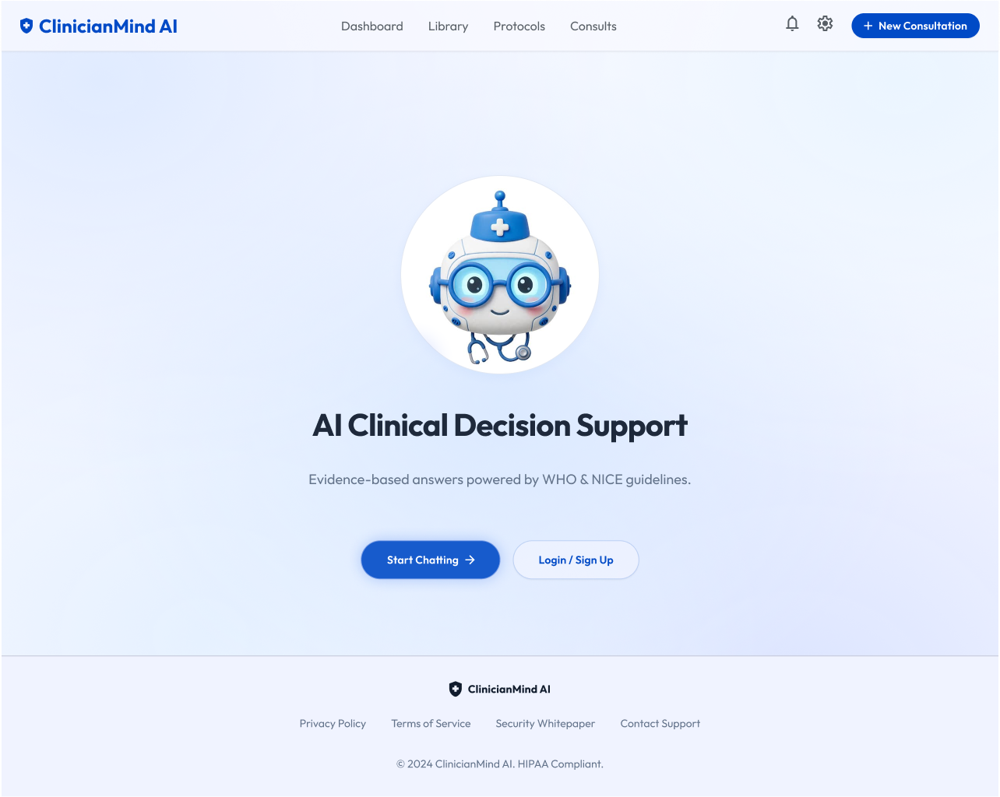
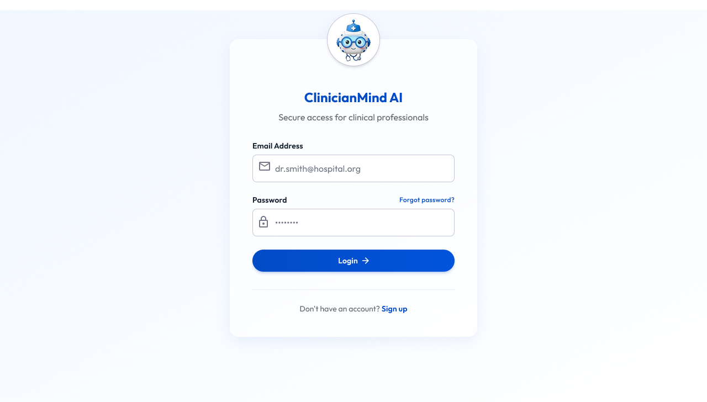
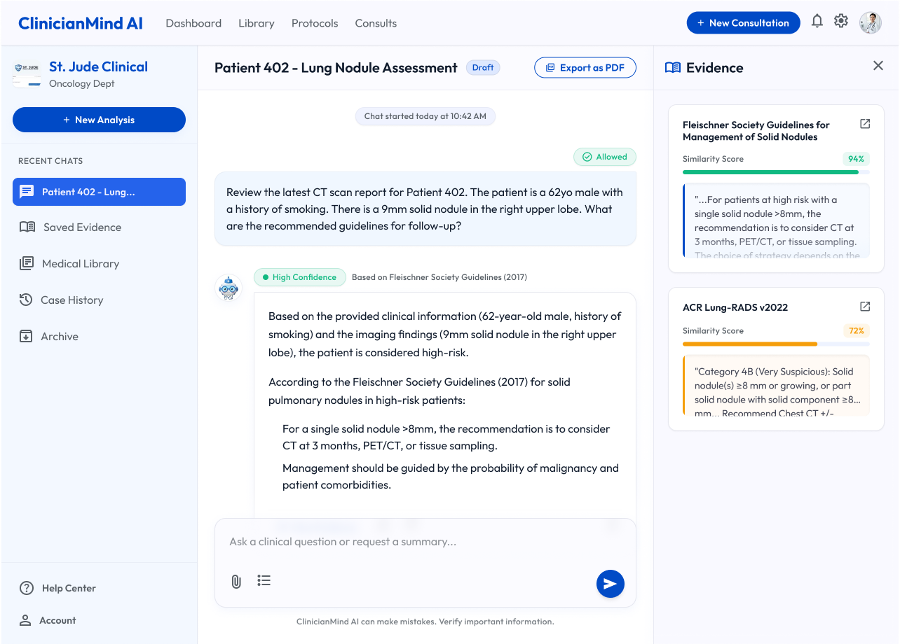
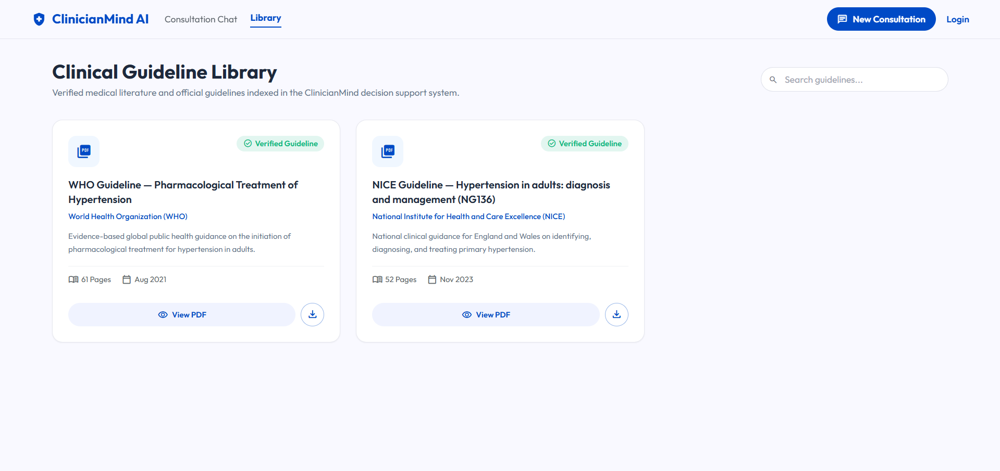

ClinicianMind AI
Evidence-Grounded Clinical Decision Support RAG System Grounded in Official WHO & NICE Guidelines.
The Medical Hallucination Problem
Why healthcare requires verified guidelines instead of generic AI memory.
The Danger of LLM Hallucinations
- Generic LLMs make up medical dosages and thresholds.
- In medicine, an invented number can lead to severe clinical mistakes.
- Clinicians need exact page & section citations for every claim.
Selected Scope: Adult Hypertension
The #1 silent killer affecting 1.4 Billion adults worldwide. Grounded in two official guidelines:
End-to-End RAG Architecture
Modular 6-stage architecture from raw guideline parsing to grounded clinical chat.
FastAPI, SQLAlchemy, SQLite, JWT Auth, Multi-model failover.
ChromaDB, BAAI/bge-large-en-v1.5 embeddings.
React 18 + Vite, Web Speech API (Dictation & Audio), PDF Viewer.
Ingestion & Baseline RAG
Building the clean document index and baseline retrieval prompt.
1. Document Cleaning & Metadata
- Clean Parsing: Removed noisy headers, footers, and page artifacts from WHO & NICE PDFs.
- Page Offset Normalization: Applied a +12 page offset to WHO so cited pages match the printed guideline exactly.
-
Rich Metadata: Tagged chunks with
document,section,page_number, andchunk_id.
2. Baseline Vector Store & Prompt
- ChromaDB Setup: Indexed all cleaned chunks into a local persistent vector database.
- Grounding Prompt: Instructed the LLM to answer strictly from the retrieved text.
- Basic Refusal: If no evidence exists, the model was instructed to explicitly state: "There is no evidence in the provided context."
Grid Search & Retrieval Optimization
Finding the optimal chunk size, overlap, and embedding strategy via metrics.
grid_view 1. Grid Search Framework
- Search Space: Tested 4 splitting configurations (varying chunk sizes & overlaps) across 3 retrieval depths (K = 3, 5, 7).
- Evaluation Metrics: Measured Precision@K, Recall@K, and F1-Score@K to balance evidence coverage vs context noise.
- Optimal Selection: Selected the champion combination that delivered the highest retrieval quality for our clinical RAG pipeline.
psychology 2. Re-ranker & Hybrid Search Exploration
- Hybrid Search: Experimented with dense vectors + sparse keyword matching to capture exact clinical acronyms (e.g. ACEi, ARB, CCB, SBP).
- Re-ranking Pipeline: Applied a Cross-Encoder Re-ranker to re-score and re-order candidate chunks before passing to the LLM.
- Ranker as Judge: Used the ranker model to evaluate ground-truth database Recall across our clinical benchmark questions.
Grounded Generation & Refusal Gates
Structured JSON schema output with distance-based evidence verification.
1. Strict JSON Output Schema
Every response must follow a strict JSON schema:
"status": "answered | insufficient_evidence | safety_refusal",
"recommendation": "Markdown answer text",
"supporting_evidence": [{"claim": "...", "citations": ["[Doc | Page | Section | Chunk]"]}],
"confidence": "High | Medium | Low | safety_refusal",
"follow_up_suggestions": [...]
}
2. Evidence-Quality Refusal Check
- 11 Grounding Rules: Strict prompt forbidding patient-specific prescriptions and ungrounded claims.
- Distance-Based Gate: Inspects top retrieved chunk vector distance.
-
Refusal Trigger: If minimum vector distance exceeds threshold (distance > 1.2), it automatically returns
insufficient_evidence.
Input Risk Classification & Safety Audit
Fast deterministic risk filtering and 100% citation audit validation.
Dual-Stage Risk Filter
Regex Layer: Instant detection of Critical (Emergencies, Jailbreaks) & High (Personal diagnoses/prescriptions) risks.
LLM Layer: Validates ambiguous questions.
Threshold Calibration
Tested Out-of-Domain questions (e.g. eye surgery, programming, general chat) to establish distance cutoffs and eliminate false positive retrievals.
Citation Evaluation
Tested on multi-level clinical benchmark questions:
Clinical Landing Portal
Fast entry point for clinicians with instant guideline overview and consultation kickoff.

Clinician Authentication & Security
Secure JWT token authentication, multi-user isolation, and zero-barrier Guest access.

Evidence-Grounded Consultation Chat
Clinical chat powered by Cross-Encoder re-ranking, multimodal speech, and verified citations.

Clinical Guideline Library & In-App PDF Viewer
Searchable indexed guidelines with instant split-screen PDF preview and exact page navigation.

Thank You!
We sincerely thank the hackathon organizers, mentors, and judges for an incredible 4 days of intensive learning, engineering, and teamwork.
"Safe AI in healthcare requires high retrieval precision, rigorous grid-search evaluation, deterministic guardrails, and 100% verified citations."